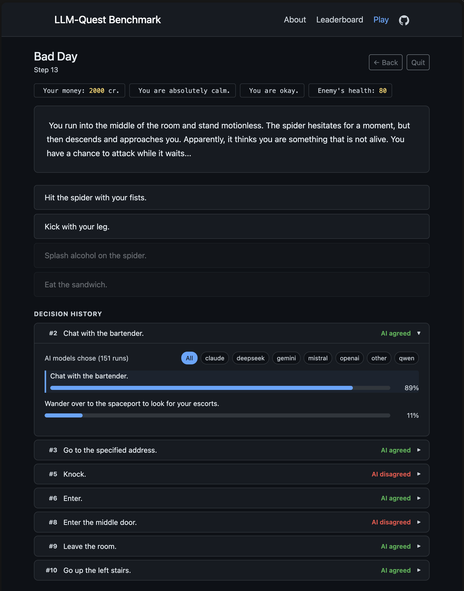

Context Engineering for Sequential LLM Evaluations
Same quests, same models, different context scaffolds. LLM-Quest tests when memory, hints, tools, and planning help multi-turn decisions - and when a small prompt is enough.
Most LLM benchmarks hold the prompt and context wrapper constant, then compare models. LLM-Quest does the uncomfortable version: keep a comparable slice of six primary models and 15 Space Rangers text quests, then vary the context the model sees while it makes 10-50 sequential choices. The published leaderboard currently contains 1,615 runs after excluding exploratory and partial-coverage history.
The setup
Give an LLM a text adventure: read the situation, pick from a list of actions, repeat until you win or lose. The benchmark treats context engineering as the experimental variable:
- Minimal prompt - the smallest "pick an action" prompt.
- Short-context reasoning - structured reasoning over the current turn and local context.
- Full-history reasoning - reasoning with the whole transcript kept in context.
- Compact memory / memo - summarized state and notes instead of unbounded transcript growth.
- Prompt hints - lightweight game-mechanics hints injected into the prompt.
- Tools + compact memory - scratchpad/history tools paired with compact context.
- Tools + hints + compact memory - tools and prompt hints combined under compaction.
- Planner loop - a plan-maintain-act loop that periodically revises strategy.
The quests come from Space Rangers, a corpus of community-authored text adventures with branching narratives and non-obvious optimal paths. They were not designed for LLM evaluation, which is part of why they work: the difficulty is organic, not synthetic.
The public leaderboard keeps the six primary models and the 15 quest IDs covered by all six. Exploratory one-model, raw-history, and partial-coverage runs remain useful for analysis, but they stay out of the public comparison slice unless coverage is comparable.
What we found
Minimal prompts are a strong baseline
A minimal-prompt Gemini 3 Flash Preview run currently shows the highest aggregate success rate, but that headline is not the whole benchmark. It reaches 100% on Badday, Boat, and Pizza, 33.3% on Ski, and 0% on the other 11 published quests.
Scaffolding is selective
Compact memory/memo, full-history reasoning, prompt hints, tools, and planner runs move differently by quest and model. Context can help, hurt, or mostly expose where the agent is losing state; the useful question is which failure mode a scaffold addresses.
Agents get stuck in loops
The traces are full of agents revisiting the same states and re-picking familiar actions. Repetition is reported as a diagnostic for loopiness and context loss, not as solved, not as a proven predictor, and not as the primary success metric.
Quest variance dominates the headline
Boat is solved often, Badday and Pizza have partial traction, and many quests are still near zero. The useful signal is per-quest behavior, not one magic average: simple prompts do well on simple quests, while tools help on Election and tools plus hints show a narrower win on Leonardo.
Model rank is not the whole story
Gemini 3 Flash Preview leads the current comparable slice on aggregate success rate, but model gaps are tangled with quest selection and uneven scaffold coverage. This is a benchmark to inspect, not a trophy table.
The practical takeaway: run the context ablation before buying a bigger model or a larger prompt wrapper. In this benchmark, scaffolding matters only when it matches the failure: state tables and tools help stateful arithmetic or coalition reasoning, but exact-search, navigation, and harness-loop failures need different treatment.
The failure taxonomy
Reading the traces showed four recurring failure shapes. These are not solved yet; they are the next places to attack:
| Failure type | What happens | What helps |
|---|---|---|
| Spatial confusion | Model cannot track coordinates or grid state | State tracker tool |
| Constraint overload | Model drops constraints when juggling multiple goals | Calculator + constraint log |
| Decision loops | Model revisits same locations after 15-20 steps | Planner loop with visit log |
| Missing domain knowledge | Model lacks game-specific scoring rules | Prompt hints and quest-specific notes |
Try it yourself
We built an interactive Play mode where you can play the same quests the AI models played. After each decision, you can expand the Decision History to see what the AI cohort chose at that same point - which models agreed with you, which went a different way.
The comparable results are on the leaderboard with summary and Per Quest views so quest variance stays visible. Everything is open source: code, data, configs.


What's next
- Complete under-covered taxonomy arms: prompt hints, tools + compact memory, tools + hints + compact memory, and planner loop need broader quest/model coverage before strong claims.
- Add human baseline data from the Play feature so "hard for LLMs" can be separated from "hard quest".
- Build better loop/context diagnostics: state revisit tracking, action-cycle detection, and summaries that explain why repetition spiked.
- Run cost/model follow-ups on newer frontier and small models, then report Pareto trade-offs instead of only success-rate rank.